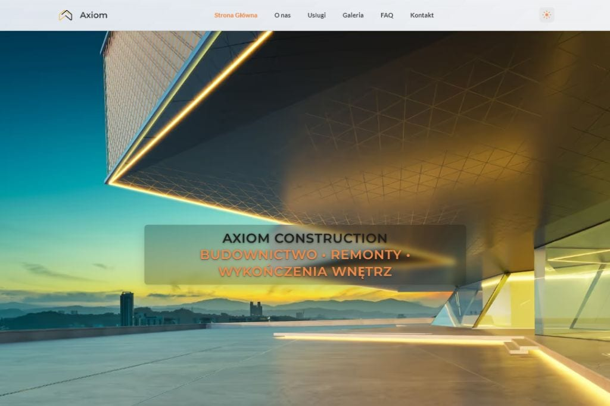

01
Axiom
Strona firmy budowlanej zaprojektowana pod czytelną prezentację usług, mocny wizerunek marki i wygodne prowadzenie użytkownika do kontaktu.
Przegląd projektu
Axiom rozwija estetykę nowoczesnej strony firmowej dla branży budowlanej, w której kluczowe są wiarygodność, porządek i konkret.
Projekt został zbudowany wokół komunikacji usług, wyeksponowania przewag marki i struktury pozwalającej szybko przejść od pierwszego wrażenia do działania.
Układ sekcji porządkuje najważniejsze informacje tak, aby marka była odbierana jako profesjonalna i dobrze zorganizowana. To ważne zwłaszcza tam, gdzie użytkownik ocenia firmę przez pryzmat czytelności oferty i jakości prezentacji.
Projekt jest gotowym konceptem portfolio, który można dalej rozszerzać o realizacje, referencje, rozbudowane podstrony ofertowe lub bardziej szczegółowe treści sprzedażowe.
StronyBiznesUsługiBudownictwo
Zakres i akcenty
Projekt stawia na prostą, mocną komunikację, która pomaga szybko zrozumieć zakres usług i charakter marki.
02
Spójny ton marki
03
Skalowalna baza
Technologie i standard
Realizacja korzysta z lekkiego stacku, który dobrze wspiera przejrzyste projekty firmowe i wygodne dalsze utrzymanie.
Statyczna architektura daje pełną kontrolę nad treścią i interfejsem, a jednocześnie pozwala utrzymać dobrą wydajność oraz przewidywalność wdrożenia.
- semantyczna struktura wspierająca czytelność treści,
- responsywny layout dla urządzeń mobilnych i desktopowych,
- modułowe sekcje gotowe do rozwoju wraz z marką.
Prezentacja wizualna
Widok projektu pokazuje uporządkowany kierunek wizualny odpowiedni dla nowoczesnej firmy budowlanej.

Dalszy krok
Otwórz wersję live projektu albo wróć do całego portfolio.
Project detail page zachowuje wspólną strukturę z pozostałymi realizacjami, dzięki czemu portfolio pozostaje czytelne i skalowalne.